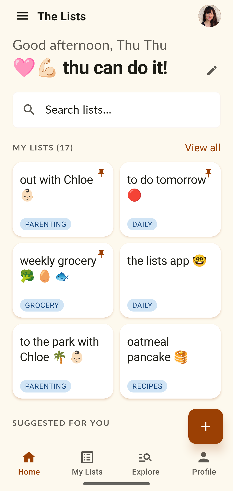
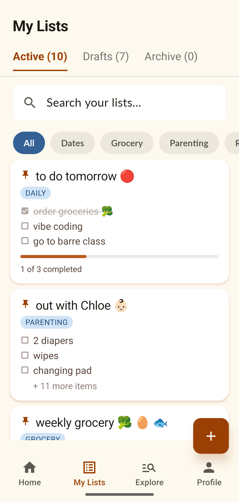
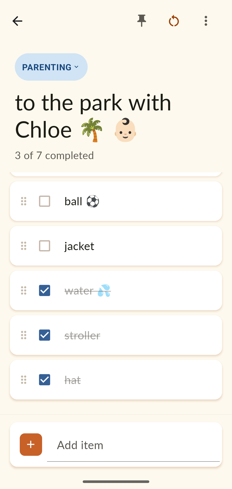
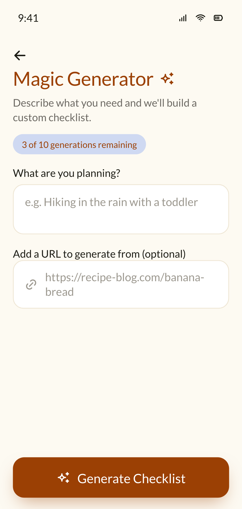
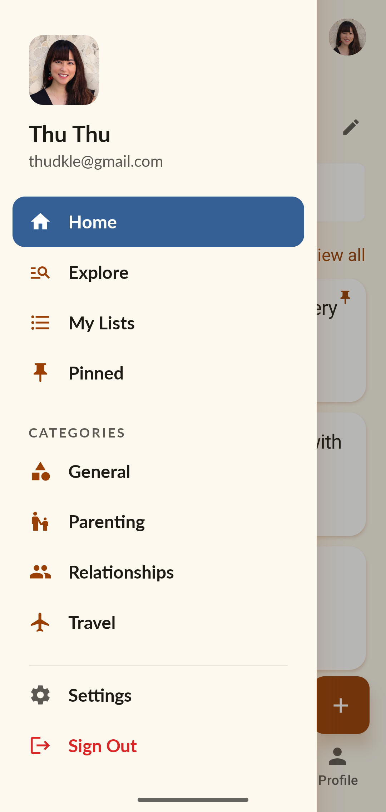
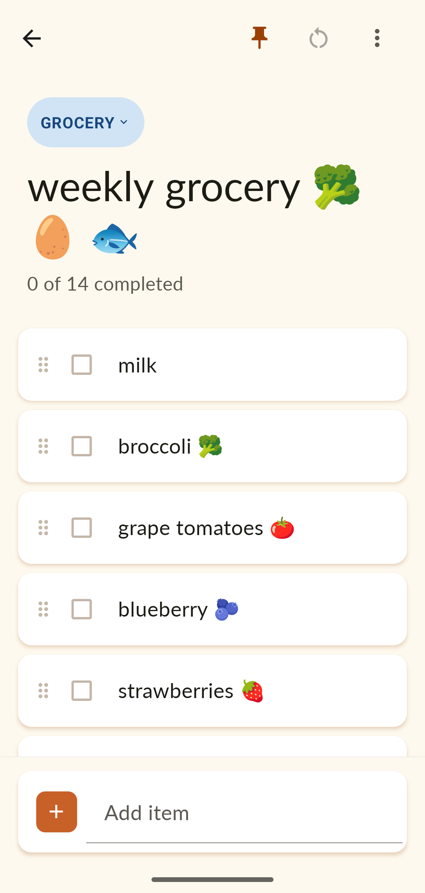
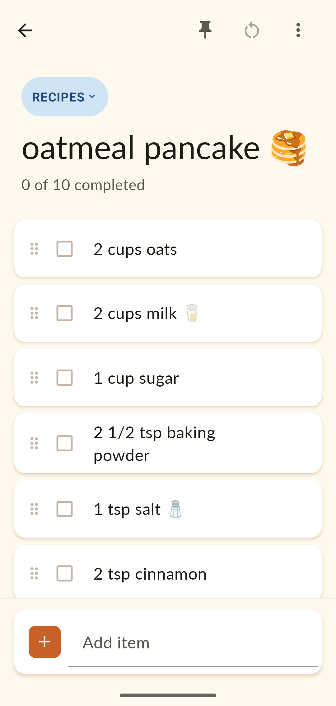
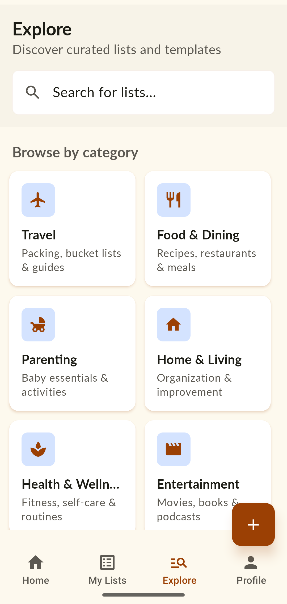
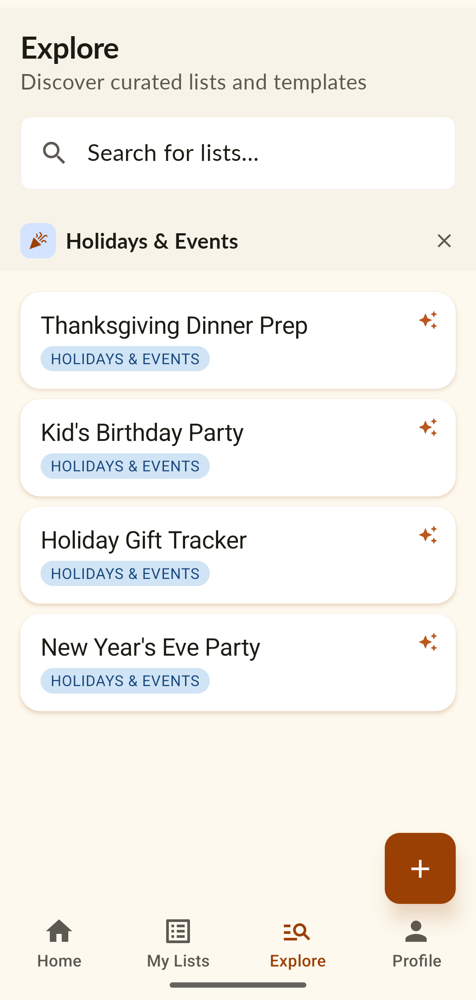
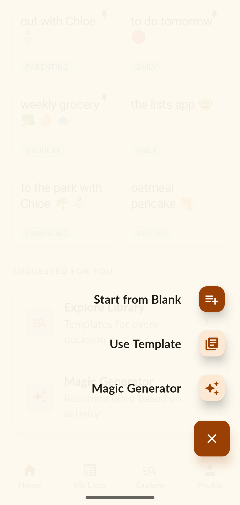

The Lists is my first vibe-coding experiment — a mobile app I designed and built end to end with Claude Code to solve my own problem: every to-do app I tried could check a list off, but none could reset and reuse it. So I built the one I always wanted.




Every checklist app I tried optimized for the same moment: type a list, check it off, watch it disappear. But the lists I actually repeat never went away — they just had to be rebuilt from scratch each time. When I had my daughter, I prepared the same bag of items every time we went out. The same went for recipes, the weekly grocery run, a day at the park.
I'd always wanted an app that could simply reset and reuse a list. So I started building one with AI — a way to put my design skills and AI's capabilities together and turn the idea into something I could really use every day.
Home greets you by name and shows your lists, pinned favorites, and quick ways to start a new one. Everything sits in one calm, consistent look — a cream background, one warm accent, generous type — so the app feels personal rather than purely functional. Lists are organized by category, searchable, and a tap away from the full library.
Because I made this app for myself, its look and feel follows my own taste and personal brand — so you'll notice the same design language running through both my portfolio and the Lists app.

The core interaction. Items can be dragged to reorder and checked off as you go, and each list tracks its own progress — 3 of 7 completed. When the trip or the day is over, one tap on reset clears every checkbox and the list is ready for next time. Pin the ones you reach for most so they stay at the top.
The same model carries any kind of list — a grocery week, a recipe, a packing run, a day at the park. Each keeps its category, its emoji, and its place in your library.


Explore is a curated library of ready-made lists organized by category — parenting, travel, relationships, lifestyle, food, holidays & events. Going out with baby, flying with kids, ski-trip packing, date night, house moving, birthday planning. Save a template, customize it to your life, and it becomes one of your reusable lists.


Magic Lists is the premium, AI-powered part. Describe what you're planning — “flying from San Francisco to Vietnam with a toddler” — pick who it's for, and the app builds a complete, sensible checklist in seconds. Travel prep, event planning, parenting situations, packing, life events. It's the fastest way to go from a vague plan to a list you can act on.

I ran the build as a deliberate side-by-side test — same app idea, two very different ways of working with AI. The results made the case for treating AI like a teammate you brief, not a tool you prompt one task at a time.
I also switched tools partway through. I started in Gemini on the Antigravity IDE — Claude wasn't the obvious choice yet — then moved to Claude Code, which was much better at building the product end to end and followed my instructions closely.
The Lists is my own product — designed, built, and used every day, and shipped end to end with Claude Code. The whole process in my own hands: framing the problem, structuring it, designing the interactions and the look, and building it.